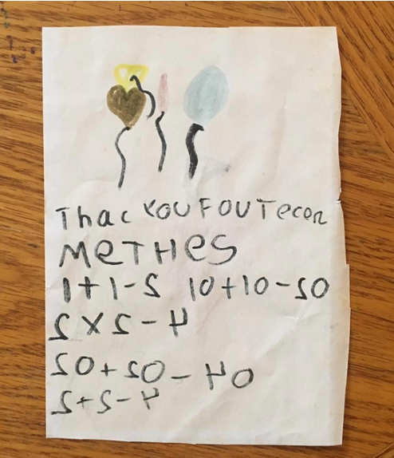
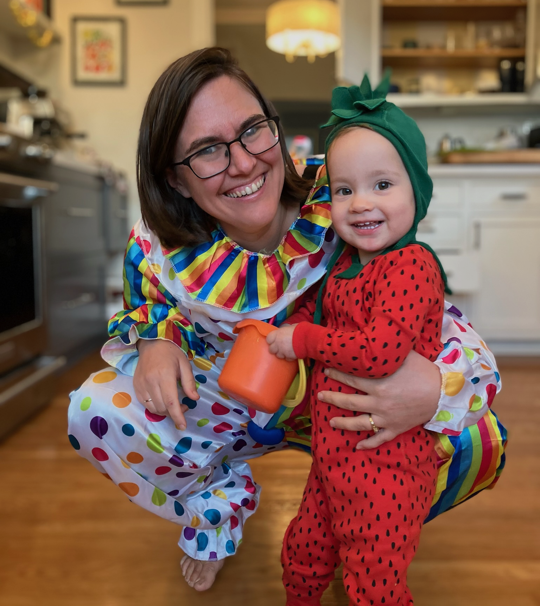
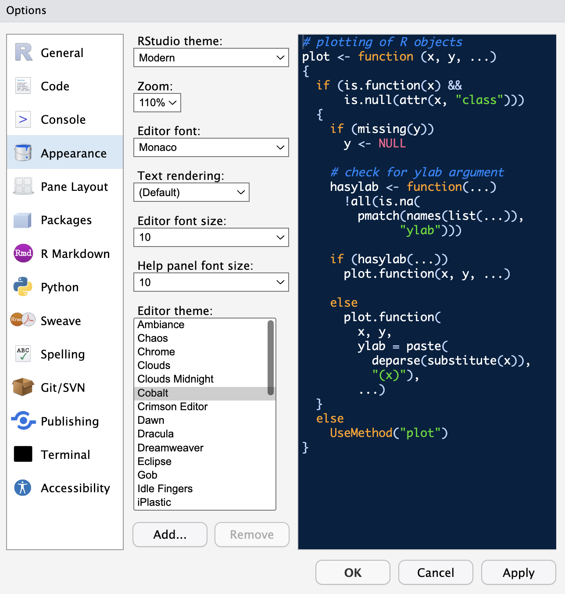
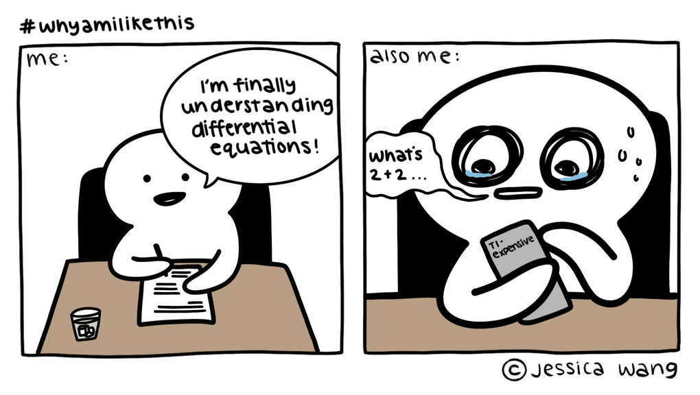
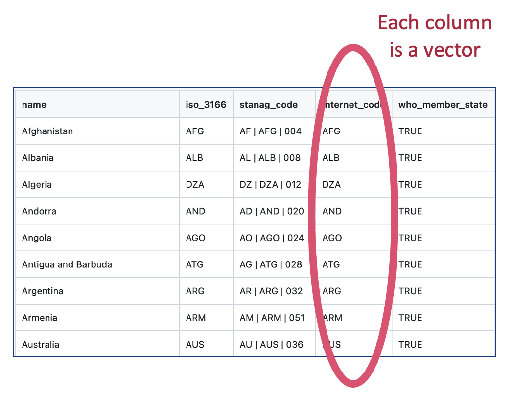
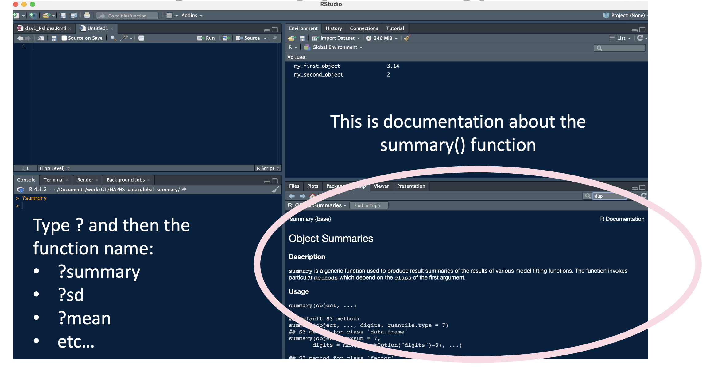

[1] 2[1] -2[1] 10[1] 2Intro to statistical programming


All course materials are on github.
We’ll talk more about github starting tomorrow.

For some people, it’s easier to learn by doing, typing, and making mistakes. I’m one of those people. Others prefer to listen, think, and work through problems later on their own.
In this workshop, we’ll pause to do worked examples. Sometimes these will be confusing. This is the point! We will learn together by trial and error.
If you are more comfortable following along for now, feel free to just watch and try at home. But I really encourage you to try, the best way to learn R is to repeatedly do stuff wrong and then figure out the errors.
Statistical programming is using code to clean, analyze, visualize, and interpret data.




## Create an object named "my_first_object" with value 3.14
my_first_object <- 3.14
## print out the object we created
my_first_object[1] 3.14
is() will help us learn the data type of a given object
Warning in c(1, 2, 3, 4, 5) + c(8, 0): longer object length is not a multiple
of shorter object length[1] 9 2 11 4 13function(object)?function-name or help(function-name) to learn more about functions
?mean or help(mean)
See you tomorrow.